pacman::p_load(sf, MCI, tmap, ggstatsplot,
patchwork, knitr, tidyverse)
tmap_options(component.autoscale = FALSE)Hands-on Exercise 8
Market Area Analysis with the Huff Model
1 Overview
In Exercise 7, accessibility to eldercare centres was measured from the distances between hexagons and centres. In this exercise, the distances between villages and stores are used to divide the residents of Taichung City, Taiwan, among the 28 stores of a fast-food franchise.
On slide 8, the Huff model “estimates the probability of a consumer visiting a specific store by considering the store’s attractiveness and the distance to it, relative to competing stores”. The probabilities define the trade area of each store. Multiplied by the population of each village and summed over the villages, the probabilities give an estimate of the customers of each store.
Part 1 is a reproduction of r4gdsa chapter 18, which computes the Huff probabilities with the MCI package, maps the trade area of one store and compares the estimated customers of each store with its recorded sales. In Part 2, the study area, the attraction variable and the distance exponent of the chapter are checked, the exponent is fitted to the recorded sales, and the trade areas are mapped as probabilities.
NoteSources
The hands-on exercise for Lesson 8 is this chapter:
The Lesson 8 outline lists four readings for before the lesson.
| Reading | What it contributes | Used in |
|---|---|---|
| Rodrigue, The Geography of Transport Systems, A.18 “Spatial Interactions and the Gravity Model” | The general spatial interaction model \(T_{ij} = f(V_i, W_j, S_{ij})\), with \(S_{ij}\) the “friction of distance” | 3.1 |
| Rodrigue, The Geography of Transport Systems, A.15 “Market Area Analysis” | Market areas as “ranges of probabilities that customers will attend specific locations (Huff’s law)”; the two-store figure of slide 11 | 3.1, 4.4 |
| Huff (1963), “A Probabilistic Analysis of Shopping Center Trade Areas” | The model, with selling space as attraction and travel time as cost; an exponent estimated from data; trade areas as probability contours | 3.1, 4.2, 4.3, 4.4 |
| Nakanishi and Cooper (1982), “Simplified Estimation Procedures for MCI Models” | Estimation of the MCI model by dummy-variable regression with standard regression packages, from observed market shares | 4 |
Of the eight references the outline also lists, the following is used on this page:
| Reference | What it contributes | Used in |
|---|---|---|
| Wieland (2017), “Market Area Analysis for Retail and Service Locations with MCI” | The functions of the MCI package; the study area as the first step of a Huff analysis; the fit of \(\lambda\) to observed store totals |
3.1, 4.1, 4.3, 4.5 |
The other references are about gravity models of flows between regions (Haynes and Fotheringham, 2020; Farmer and Oshan, 2017; Flowerdew and Aitkin, 1982; Klapka et al., 2013; Yue et al., 2012) and spatial econometric models of origin-destination flows (Floch and Le Saout, 2018; LeSage and Pace, 2008; Tsutsumi and Tamesue, 2012). Chapter 18 has no flow data, so these references are background reading for this page. The outline’s “All About R” section links MCI and REAT. MCI is used throughout. REAT also has a huff() function, which this page does not use.
The Lesson 8 slide deck has 15 slides. Slides 9 and 10 give the utility and the probability of the Huff model. Slides 12 and 13 give the expected customers and the market share of each store. Slides 14 and 15 give the MCI model.
1.1 Differences from the chapter
| The chapter | This page | Why | Where | |
|---|---|---|---|---|
| Layer names | STORES_TN and VILLAGE_TN in the text; four data sets |
STORES_TC, TOWN_TC and VILLAGE_TC; five data sets |
The code reads the _TC layers and the town layer |
2.2 |
| Overview map | interactive (tmap_mode("view")) |
static, with a title, north arrow, scale bar and grid | A static map shows the whole city at once | 2.3 |
| Missing population | five villages removed as missing values | the same five villages removed, identified as unassigned areas | The five areas have no village name and no population | 2.5.4 |
| Heping District | not mentioned | compared between the population table and the layers | The population table has eight villages of Heping District with no polygon in the layers | 4.1 |
| Village point | “centroid” in the text, st_point_on_surface() in the code |
st_point_on_surface() |
A point on the surface is always inside the village. The centroid and the point on the surface are up to 1.4 km apart | 3.2 |
| Selected store | “TG” in the text, “BT” in the code | BT | The chapter’s map and code are for BT | 3.5 |
| Join of the trade area | left_join() without by |
by = "VILLCODE" |
The join key is written out | 3.5 |
| Store attraction | Store_size = 100 for every store |
the same in Part 1; its effect tested in Part 2 | With equal attraction, the probabilities depend on distance only | 4.2 |
| Distance exponent | the default \(\lambda = -2\) of huff.shares() |
\(-2\) in Part 1; fitted to the recorded sales in Part 2 | Huff (1963) estimated the exponent from data | 4.3 |
| Scatter plot of sales | histograms on the margins; Bayesian line of results below the chart | histograms kept; bf.message = FALSE |
The lessons use p-values | 3.6 |
| Last code chunk | huff_share_wider, a wide table of the probabilities |
left out | The chapter creates the table as its last step and does not use it | 3.6 |
NoteMapping of chapter 18 to this page
| Chapter | This page |
|---|---|
| 18.1 Overview | 1 Overview |
| 18.2 Getting Started | 2.1 Packages |
| 18.3.1 Importing geospatial data | 2.3 Geospatial data |
| 18.3.2 Importing aspatial data | 2.4 Aspatial data |
| 18.4.1 to 18.4.4 Data Preparation | 2.5.1 to 2.5.4 |
| 18.5 Computing Distance Matrix | 3.2 Distance matrix |
| 18.6 Preparing Interaction Matrix | 3.3 Interaction matrix |
| 18.7 Computing Huff model | 3.4 Huff probabilities |
| 18.7.1 Trade area analysis for a single store | 3.5 Trade area of store BT |
| 18.7.2 Store sales analysis | 3.6 Estimated customers of each store |
2 Getting started
2.1 Packages
NoteHow the code works
pacman::p_load(...) # pacman
tmap_options(component.autoscale) # tmapp_load()loads each package, and installs any that are missing.tmap_options(component.autoscale = FALSE)stopstmapfrom shrinking the titles, legends and scale bars of the maps when they do not fit.
| Package | Used for |
|---|---|
sf |
reading the shapefiles, points inside the villages, distances |
MCI |
huff.shares(), shares.total() and huff.lambda() |
tmap |
maps |
ggstatsplot |
the scatter plot with a correlation test in section 3.6 |
patchwork |
placing two charts side by side |
knitr |
tables |
tidyverse |
reading, joining and reshaping the tables (readr, dplyr, tidyr), and ggplot2 charts |
2.2 The data
The data sets are distributed with the exercise on eLearn, in the folder data/.
| Data set | Format | Features | Contents |
|---|---|---|---|
STORES_TC |
ESRI shapefile | 28 points | stores of the franchise in Taichung City, with name, address and store code |
TOWN_TC |
ESRI shapefile | 28 polygons | districts of Taichung City |
VILLAGE_TC |
ESRI shapefile | 622 polygons | villages (里) of Taichung City, with the village code VILLCODE |
pop2019.csv |
CSV | 625 rows | households (H_CNT), population (P_CNT), males (M_CNT) and females (F_CNT) of each village, December 2019 |
Store_sales_data.csv |
CSV | 5,499 rows | number of bills and sales amount (currency not given) by store code and POD code |
The folder also has storeCD.csv and a second store layer, STORES_TC1, which the chapter does not use. storeCD.csv gives each of the 28 stores the same Capacity, 50, with no unit. STORES_TC1 has the 28 stores and a 29th point, “New Store”, with the code NS.
2.3 Geospatial data
2.3.1 Reading the three layers
stores <- st_read(dsn = "data/geospatial",
layer = "STORES_TC")
town <- st_read(dsn = "data/geospatial",
layer = "TOWN_TC")
village <- st_read(dsn = "data/geospatial",
layer = "VILLAGE_TC")tibble(layer = c("stores", "town", "village"),
features = c(nrow(stores), nrow(town), nrow(village)),
geometry = c(as.character(st_geometry_type(stores, by_geometry = FALSE)),
as.character(st_geometry_type(town, by_geometry = FALSE)),
as.character(st_geometry_type(village, by_geometry = FALSE))),
epsg = c(st_crs(stores)$epsg, st_crs(town)$epsg, st_crs(village)$epsg)) |>
kable()| layer | features | geometry | epsg |
|---|---|---|---|
| stores | 28 | POINT | 3826 |
| town | 28 | POLYGON | 3826 |
| village | 622 | MULTIPOLYGON | 3826 |
NoteHow the code works
st_read(dsn, layer) # sf
st_geometry_type(x, by_geometry = FALSE) # sf
st_crs(x)$epsg # sf
tibble(...) # tibble
kable(x, digits) # knitrst_read()reads the shapefile named bylayerfrom the folderdsninto a simple feature data frame.results: hidesuppresses the report thatst_read()prints for each file.st_geometry_type(by_geometry = FALSE)returns one geometry type for the whole layer.st_crs()$epsgreturns the EPSG code of the coordinate reference system.tibble()builds a data frame with one row for each layer, andkable()prints it as a table. The other tables on this page are also printed withkable(). Wheredigitsis given, it rounds the numbers.
The three layers are in TWD97 / TM2 zone 121, EPSG:3826, a projected coordinate system in metres, so distances between the layers can be computed without a transformation.
2.3.2 Map of the layers
The first map below shows the districts, the villages and the stores together. The second map shows the five central districts at a larger scale.
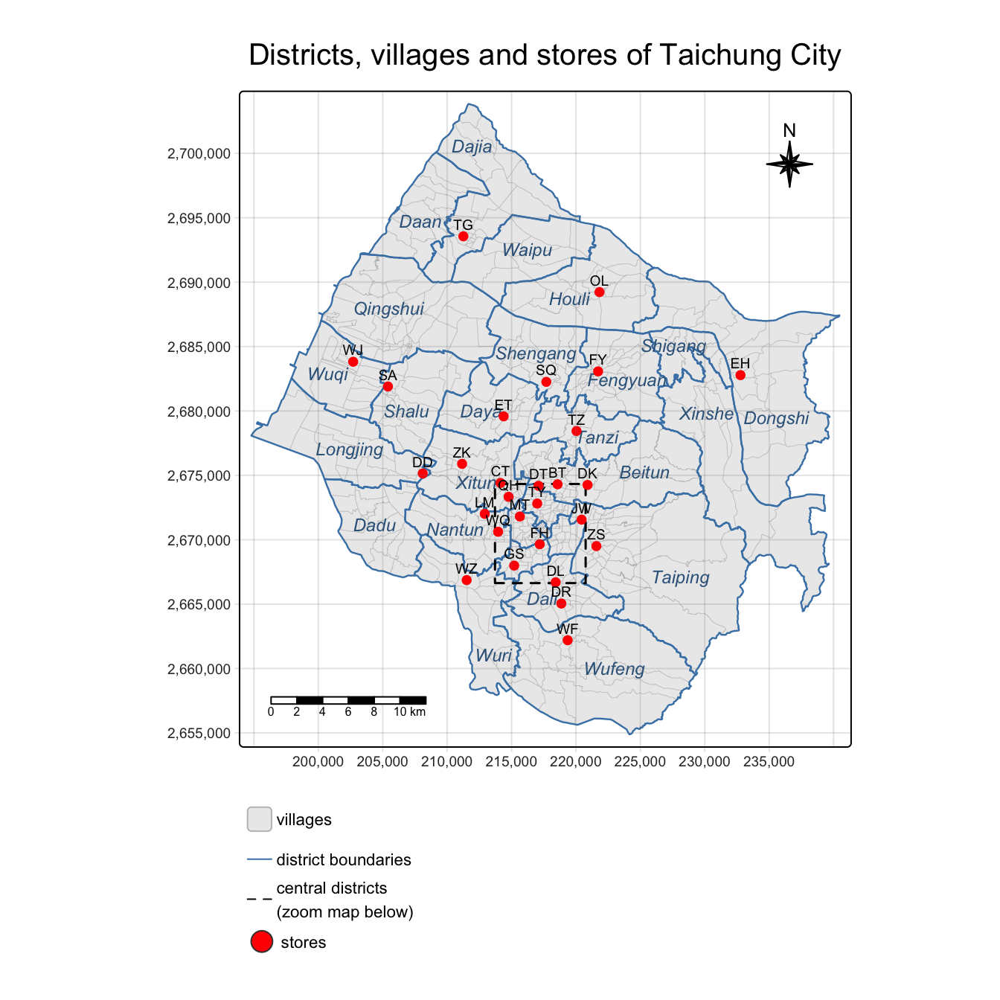
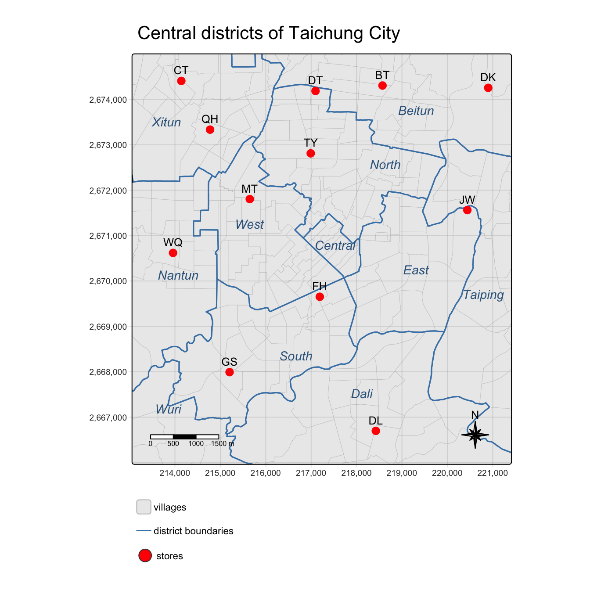
town <- town |>
mutate(name = str_remove(TOWNENG, " District"),
name = recode(name, Zhong = "Central", W. = "West", E. = "East",
N. = "North", S. = "South"))
central <- c("Central", "East", "West", "North", "South")
label_point <- function(d) {
grid <- st_make_grid(d, cellsize = 250, what = "centers")
grid <- grid[st_intersects(grid, d, sparse = FALSE)[, 1]]
room <- pmin(as.numeric(st_distance(grid, st_cast(st_geometry(d), "MULTILINESTRING"))),
as.numeric(apply(st_distance(grid, stores), 1, min)))
grid[which.max(room)]
}
town_label <- filter(town, !name %in% central)
town_label <- st_sf(name = town_label$name,
geometry = do.call(c, lapply(seq_len(nrow(town_label)),
\(k) label_point(town_label[k, ]))))
tm_shape(village) +
tm_polygons(fill = "grey92", col = "grey75", lwd = 0.3) +
tm_shape(town) +
tm_borders(col = "steelblue", lwd = 1.2) +
tm_shape(st_as_sfc(st_bbox(filter(town, name %in% central)))) +
tm_borders(col = "black", lwd = 1.5, lty = "dashed") +
tm_shape(town_label) +
tm_text("name", size = 0.75, col = "steelblue4", fontface = "italic") +
tm_shape(stores) +
tm_dots(fill = "red", size = 0.4) +
tm_text("Store_CD", size = 0.6, ymod = 0.7) +
tm_add_legend(type = "polygons", labels = "villages", fill = "grey92", col = "grey75") +
tm_add_legend(type = "lines", labels = "district boundaries", col = "steelblue") +
tm_add_legend(type = "lines", labels = "central districts\n(zoom map below)",
col = "black", lty = "dashed") +
tm_add_legend(type = "symbols", labels = "stores", fill = "red") +
tm_title("Districts, villages and stores of Taichung City") +
tm_compass(type = "8star", size = 2, position = c("right", "top")) +
tm_scalebar(position = c("left", "bottom")) +
tm_grid(alpha = 0.2) +
tm_layout(frame = TRUE, legend.outside = TRUE,
legend.outside.position = "right")
zoom <- st_bbox(st_buffer(st_as_sfc(st_bbox(filter(town, name %in% central))), 500))
zoom_label <- town |>
st_crop(zoom) |>
st_difference(st_union(st_buffer(st_crop(stores, zoom), 400))) |>
st_point_on_surface()
tm_shape(village, bbox = zoom) +
tm_polygons(fill = "grey92", col = "grey75", lwd = 0.3) +
tm_shape(town) +
tm_borders(col = "steelblue", lwd = 1.5) +
tm_shape(zoom_label) +
tm_text("name", size = 0.9, col = "steelblue4", fontface = "italic") +
tm_shape(stores) +
tm_dots(fill = "red", size = 0.6) +
tm_text("Store_CD", size = 0.8, ymod = 0.8) +
tm_add_legend(type = "polygons", labels = "villages", fill = "grey92", col = "grey75") +
tm_add_legend(type = "lines", labels = "district boundaries", col = "steelblue") +
tm_add_legend(type = "symbols", labels = "stores", fill = "red") +
tm_title("Central districts of Taichung City") +
tm_compass(type = "8star", size = 2, position = c("right", "bottom")) +
tm_scalebar(position = c("left", "bottom")) +
tm_grid(alpha = 0.2) +
tm_layout(frame = TRUE, legend.outside = TRUE,
legend.outside.position = "right")
NoteHow the code works
str_remove(string, pattern); recode(x, old = new) # stringr, dplyr
st_make_grid(x, cellsize, what = "centers") # sf
st_distance(x, y); st_cast(x, "MULTILINESTRING") # sf
st_bbox(x); st_as_sfc(bbox); st_buffer(x, dist) # sf
st_crop(x, bbox); st_difference(x, y) # sf
tm_shape(shp, bbox) + tm_polygons(fill, col, lwd) # tmap
tm_borders(col, lwd, lty); tm_dots(fill, size) # tmap
tm_text(text, size, col, fontface, ymod) # tmap
tm_add_legend(type, labels, fill, col, lty) # tmap
tm_compass(); tm_scalebar(); tm_grid() # tmapTOWNENGholds the English name of each district, such as “Xitun District”.str_remove()drops ” District”, andrecode()writes out the short names of the five central districts, such as “W.” for West and “Zhong” for Central.- The five central districts cover 0.9 to 7.8 km² each, too small for a name on the map of the whole city. The dashed rectangle marks them on the first map, and the second map shows them at a larger scale.
label_point()finds a place for the name of a district.st_make_grid()puts points 250 m apart over the district, and the function keeps the point farthest from both the district boundary and the nearest store, so that the name lies inside its district and clear of the store labels.- For the second map,
st_crop()cuts the districts to the rectangle,st_difference()removes 400 m around each store, andst_point_on_surface()places each name in the area that remains.bbox = zoomin the firsttm_shape()sets the extent of the map to the rectangle. - Each
tm_shape()starts a layer, and the layers are drawn in order: the villages in grey, the district boundaries in blue, the district names in blue italics, and the stores as red points. tm_text()writes the store code of each point.ymodmoves the label up so that it does not cover the point.- Each layer is drawn in one colour, so
tm_add_legend()adds one legend entry for each layer. tm_compass(),tm_scalebar()andtm_grid()add a north arrow, a scale bar and grid lines with coordinates in metres.legend.outside = TRUEplaces the legend outside the map frame: to the right of the map, or below it when the legend is too wide for the space on the right.
The 28 stores are in 21 of the 28 districts of the town layer. Xitun District (西屯區) has 3 stores, the most of any district. Six stores are in the five central districts: DT and TY in North District, MT in West District, FH and GS in South District, and JW in East District.
2.4 Aspatial data
2.4.1 Reading the two tables
pop2019 <- read_csv("data/aspatial/pop2019.csv")
store_sales <- read_csv("data/aspatial/Store_sales_data.csv")
NoteHow the code works
read_csv(file) # readrread_csv()reads a CSV file into a tibble and sets the type of each column from its values. The village names inpop2019.csvare in Chinese characters and are read as text.
2.4.2 Store sales
summary(store_sales) Store Code POD code Bills Amount
Length :5499 Length :5499 Min. : 1.0 Min. : 0
N.unique : 233 N.unique : 322 1st Qu.: 37.0 1st Qu.: 26702
N.blank : 0 N.blank : 0 Median : 186.0 Median : 139643
Min.nchar: 2 Min.nchar: 1 Mean : 331.9 Mean : 236787
Max.nchar: 2 Max.nchar: 6 3rd Qu.: 457.0 3rd Qu.: 331952
NAs : 29 Max. :7764.0 Max. :6076060
Ave Bill
Min. : 0.0
1st Qu.: 661.3
Median : 730.5
Mean : 825.1
3rd Qu.: 862.2
Max. :24356.0 The file has 5,499 rows for 233 store codes. Of these rows, 29 have no store code. Of the rows, 678 belong to the 28 stores in Taichung. The other store codes are not in STORES_TC and drop out at the join in section 2.5.2. Each row gives the number of bills and the sales amount of one store for one POD code. The data come with no description of the POD code, the currency of the amounts or the period of the sales.
2.5 Data preparation
2.5.1 Aggregating store sales
store_sales_aggre <- store_sales |>
group_by(`Store Code`) |>
summarise(Total_Bill = sum(Bills, na.rm = TRUE),
Total_Sales = sum(Amount, na.rm = TRUE))
NoteHow the code works
group_by(x, ...); summarise(...) # dplyrgroup_by()groups the rows by store code, andsummarise()returns one row for each store code, with the sum of the bills and the sum of the sales amount over all itsPOD coderows.- The backticks around
`Store Code`are needed because the column name contains a space.
2.5.2 Relational join
stores <- stores |>
left_join(store_sales_aggre,
by = join_by(Store_CD == `Store Code`)) |>
mutate(Store_size = 100)
summary(stores) Store_Name Store_Addr Store_CD Total_Bill
Length :28 Length : 28 Length :28 Min. : 1767
N.unique :28 N.unique : 28 N.unique :28 1st Qu.: 5698
N.blank : 0 N.blank : 0 N.blank : 0 Median : 8634
Min.nchar: 2 Min.nchar: 43 Min.nchar: 2 Mean : 8021
Max.nchar:28 Max.nchar:100 Max.nchar: 2 3rd Qu.:10349
Max. :14468
Total_Sales geometry Store_size
Min. :1475963 POINT :28 Min. :100
1st Qu.:4044821 epsg:3826 : 0 1st Qu.:100
Median :6116336 +proj=tmer...: 0 Median :100
Mean :5542852 Mean :100
3rd Qu.:6959911 3rd Qu.:100
Max. :8234234 Max. :100
NoteHow the code works
left_join(x, y, by = join_by(a == b)) # dplyr
mutate(Store_size = 100) # dplyrleft_join()keeps the 28 rows ofstoresand adds the total bills and sales of the row ofstore_sales_aggrewhoseStore Codeequals the store’sStore_CD. The rows ofstore_sales_aggrewith store codes that are not instoresare dropped.mutate()adds the columnStore_sizewith the value 100 for every store, the value of the chapter.Store_sizeis the attraction of the store in the Huff model of Part 1.
The summary has no missing values in Total_Bill and Total_Sales, so each of the 28 stores has sales records. In the currency of the file, which is not given, the total sales range from 1,475,963 for store EH to 8,234,234 for store FH.
2.5.3 Tidying the population table
glimpse(pop2019)Rows: 625
Columns: 11
$ COUNTY_ID <dbl> 66000, 66000, 66000, 66000, 66000, 66000, 66000, 66000, 6600…
$ COUNTY <chr> "臺中市", "臺中市", "臺中市", "臺中市", "臺中市", "臺中市", "臺中市", "臺中市", "臺中市…
$ TOWN_ID <dbl> 66000110, 66000110, 66000110, 66000110, 66000110, 66000110, …
$ TOWN <chr> "大甲區", "大甲區", "大甲區", "大甲區", "大甲區", "大甲區", "大甲區", "大甲區", "大甲區…
$ V_ID <chr> "66000110-002", "66000110-009", "66000110-021", "66000110-00…
$ VILLAGE <chr> "大甲里", "中山里", "太白里", "孔門里", "文曲里", "文武里", "日南里", "平安里", "江南里…
$ H_CNT <dbl> 454, 1781, 406, 383, 355, 2071, 2039, 785, 461, 559, 769, 80…
$ P_CNT <dbl> 1255, 5252, 1471, 1001, 1264, 6687, 6739, 2642, 1618, 1977, …
$ M_CNT <dbl> 626, 2533, 758, 538, 640, 3244, 3406, 1310, 838, 983, 1273, …
$ F_CNT <dbl> 629, 2719, 713, 463, 624, 3443, 3333, 1332, 780, 994, 1239, …
$ INFO_TIME <chr> "108Y12M", "108Y12M", "108Y12M", "108Y12M", "108Y12M", "108Y…glimpse(village)Rows: 622
Columns: 11
$ VILLCODE <chr> "66000110029", "66000120001", "66000120002", "66000120003",…
$ COUNTYNAME <chr> "臺中市", "臺中市", "臺中市", "臺中市", "臺中市", "臺中市", "臺中市", "臺中市", "臺中…
$ TOWNNAME <chr> "大甲區", "清水區", "清水區", "清水區", "清水區", "清水區", "清水區", "清水區", "清水…
$ VILLNAME <chr> "建興里", "鰲峰里", "靈泉里", "清水里", "文昌里", "南寧里", "西寧里", "北寧里", "中興…
$ VILLENG <chr> "Jianxing Vil.", "Aofeng Vil.", "Lingquan Vil.", "Qingshui …
$ COUNTYID <chr> "B", "B", "B", "B", "B", "B", "B", "B", "B", "B", "B", "B",…
$ COUNTYCODE <chr> "66000", "66000", "66000", "66000", "66000", "66000", "6600…
$ TOWNID <chr> "B11", "B12", "B12", "B12", "B12", "B12", "B12", "B12", "B1…
$ TOWNCODE <chr> "66000110", "66000120", "66000120", "66000120", "66000120",…
$ NOTE <chr> NA, NA, NA, NA, NA, NA, NA, NA, NA, NA, NA, NA, NA, NA, NA,…
$ geometry <MULTIPOLYGON [m]> MULTIPOLYGON (((211953.9 27..., MULTIPOLYGON (…The village code V_ID of pop2019 has a hyphen after the district code, as in 66000110-002. The code VILLCODE of village has the same digits without the hyphen.
pop2019 <- pop2019 |>
mutate(V_ID = str_remove_all(V_ID, "-"))
village <- village |>
left_join(pop2019,
by = join_by(VILLCODE == V_ID))
NoteHow the code works
str_remove_all(string, pattern) # stringrstr_remove_all()deletes every hyphen fromV_ID, so that66000110-002becomes66000110002, the form ofVILLCODE.left_join()keeps the 622 polygons ofvillageand adds the population columns of the row ofpop2019with the same code.
2.5.4 Missing values
village |>
st_drop_geometry() |>
filter(is.na(P_CNT)) |>
select(VILLCODE, TOWNNAME, VILLNAME, NOTE) |>
kable()| VILLCODE | TOWNNAME | VILLNAME | NOTE |
|---|---|---|---|
| 66000120S01 | 清水區 | NA | 未編定村里 |
| 66000120S02 | 清水區 | NA | 未編定村里 |
| 66000140S01 | 梧棲區 | NA | 未編定村里 |
| 66000250S01 | 龍井區 | NA | 未編定村里 |
| 66000120S03 | 清水區 | NA | 未編定村里 |
NoteHow the code works
st_drop_geometry(x) # sf
filter(is.na(P_CNT)) # dplyrst_drop_geometry()removes the polygons, so that the table has the attributes only.filter(is.na(P_CNT))keeps the villages with no matching row inpop2019at the join.
In the chapter, the same five rows are found with summary(). The five polygons have no village name, a code ending in S01 to S03, and the note 未編定村里, “unassigned village area”. They are in the districts of Qingshui (清水區), Wuqi (梧棲區) and Longjing (龍井區). As in the chapter, they are removed, because they have no population.
village <- village |>
filter(!is.na(P_CNT))
nrow(village)[1] 6173 Part 1: Chapter 18
3.1 The Huff model
TipThe model of Huff (1963)
In “Spatial Interactions and the Gravity Model”, section A.18 of the Methods chapter of The Geography of Transport Systems, Rodrigue writes the general spatial interaction model as
\[ \begin{aligned} T_{ij} &= f(V_i, W_j, S_{ij}) \\ &= f(\text{attributes of origin } i, \ \text{attributes of destination } j, \ \text{friction of distance from } i \text{ to } j) \end{aligned} \]
where \(T_{ij}\) is the interaction between origin \(i\) and destination \(j\). Slide 7 gives the same model. In the Huff model, the attribute of the destination is the attraction of a store and the friction is the distance to it.
Reilly’s law: the retail model of slide 7. The third model of slide 7 gives the breaking point between two centres:
\[ \begin{aligned} B_{ij} &= \frac{S_{ij}}{1 + W_j / V_i} \\[4pt] &= \frac{\text{distance between centres } i \text{ and } j}{1 + \text{size of } j \div \text{size of } i} \end{aligned} \]
where \(B_{ij}\) is the distance from centre \(i\) to the breaking point. In the example of the slide, centres \(i\) of size 35 and \(j\) of size 15 are 7 units apart, and the breaking point is \(7 / (1 + 15/35) = 4.9\) units from \(i\), nearer the smaller centre \(j\).
Huff (1963, p. 82) traces the breaking point to the “Law of Retail Gravitation” of Reilly (1929): a town between two cities divides its trade between them “in direct proportion to the populations of the two cities and in inverse proportion to the square of the distances”. In the notation of Huff,
\[ \begin{aligned} \frac{B_a}{B_b} &= \frac{P_a}{P_b} \left(\frac{D_b}{D_a}\right)^2 \\[4pt] &= \frac{\text{population of city } a}{\text{population of city } b} \times \left(\frac{\text{distance from the town to city } b}{\text{distance from the town to city } a}\right)^2 \end{aligned} \]
where \(B_a\) and \(B_b\) are the proportions of the trade of the town attracted by cities \(a\) and \(b\). The breaking point is the town where \(B_a = B_b\), which Huff calls “the .5 probability position between two cities”. With the squared distance, the breaking point lies \(D_{ab} / (1 + \sqrt{P_a / P_b})\) from city \(b\), where \(D_{ab}\) is the distance between the two cities. The retail model of slide 7 has no square root: it divides by the distance itself, as the figure of slide 11 does. Rodrigue (A.15) lists Reilly’s law as the step at which “market size” entered market area analysis. Wieland (2017, p. 298) calls these early models deterministic: “each customer origin is assigned completely to one supply location”.
In the Huff model, the ratio of Reilly is extended to any number of stores, with a probability for each store. With two stores and \(\lambda = 2\), the ratio \(p_{ia} / p_{ib}\) of the Huff model below is the ratio \(B_a / B_b\) of Reilly.
Huff (1963, p. 86) gives the probability that consumers in statistical unit \(i\) travel to shopping centre \(j\) as the selling space of \(j\) divided by a power of the travel time from \(i\) to \(j\), relative to the same ratio for every centre. On slides 9 and 10, in the notation of Wieland (2017, p. 299), the utility of store \(j\) for the customers of origin \(i\) is
\[ \begin{aligned} U_{ij} &= A_j^{\gamma} \, d_{ij}^{-\lambda} \\ &= \frac{(\text{attraction of store } j)^{\gamma}}{(\text{distance from village } i \text{ to store } j)^{\lambda}} \end{aligned} \]
and the probability that the customers of \(i\) choose \(j\) is
\[ \begin{aligned} p_{ij} &= \frac{U_{ij}}{\sum_{k=1}^{n} U_{ik}} = \frac{A_j^{\gamma} \, d_{ij}^{-\lambda}}{\sum_{k=1}^{n} A_k^{\gamma} \, d_{ik}^{-\lambda}} \\[6pt] &= \frac{(\text{attraction of store } j)^{\gamma} \div (\text{distance from village } i \text{ to store } j)^{\lambda}}{\text{sum over all } n \text{ stores } k \text{ of } (\text{attraction of store } k)^{\gamma} \div (\text{distance from village } i \text{ to store } k)^{\lambda}} \end{aligned} \]
where \(A_j\) is the attraction of store \(j\), \(d_{ij}\) is the distance or travel time, \(\gamma\) is the weight of the attraction and \(\lambda\) is the weight of the distance. The probabilities of one origin sum to 1.
On slide 12, the expected number of customers from \(i\) at \(j\) is
\[ \begin{aligned} E_{ij} &= p_{ij} \, C_i \\ &= (\text{probability of store } j \text{ for village } i) \times (\text{market potential of village } i) \end{aligned} \]
where the market potential \(C_i\) is the number of potential customers or the purchasing power in village \(i\). On slide 13, the expected customers of store \(j\) in the whole study area and the market share of store \(j\) are
\[ \begin{aligned} T_j &= \sum_{i} E_{ij} \\ &= \text{sum over all villages } i \text{ of the expected customers from } i \text{ at store } j \end{aligned} \]
\[ \begin{aligned} M_j &= \frac{T_j}{\sum_{k=1}^{n} T_k} \\[4pt] &= \frac{\text{expected customers of store } j}{\text{expected customers of all } n \text{ stores}} \end{aligned} \]
The symbols of the formulas, and the columns that hold them in the code of this page:
| Symbol | Meaning | Column |
|---|---|---|
| \(i\) | origin: a village | VILLCODE |
| \(j\), \(k\) | a store | Store_CD |
| \(n\) | number of stores: 28 | |
| \(A_j\) | attraction of store \(j\) | Store_size |
| \(d_{ij}\) | distance from village \(i\) to store \(j\), in metres | distance |
| \(\gamma\), \(\lambda\) | weights of the attraction and the distance | arguments gamma and lambda |
| \(U_{ij}\) | utility of store \(j\) for the residents of village \(i\) | U_ij |
| \(p_{ij}\) | probability that a resident of village \(i\) chooses store \(j\) | p_ij |
| \(C_i\) | market potential of village \(i\): its residents | P_CNT |
| \(E_{ij}\) | expected customers from village \(i\) at store \(j\) | computed in shares.total() |
| \(T_j\) | expected customers of store \(j\) | sum_E_j |
| \(M_j\) | market share of store \(j\) | share_j |
| \(S_j\) | recorded sales of store \(j\), rescaled to persons (section 4.3) | sales_scaled |
huff.shares() of the MCI package writes the decay as \(d_{ij}^{\lambda}\) with a negative lambda. Its default lambda = -2 corresponds to \(\lambda = 2\) in the formula above.
Example: one village and two stores. Panel 1 uses the numbers of the figure on slide 11, which comes from “Market Area Analysis” (Rodrigue, A.15): a village halfway between store a, of size 250,000, and store b, of size 100,000, with the two stores 75 km apart. Panel 2 gives the two stores the same size and moves the village to 25 km from store a. The figure uses \(\gamma = 1\) and \(\lambda
= 2\), the defaults of huff.shares().
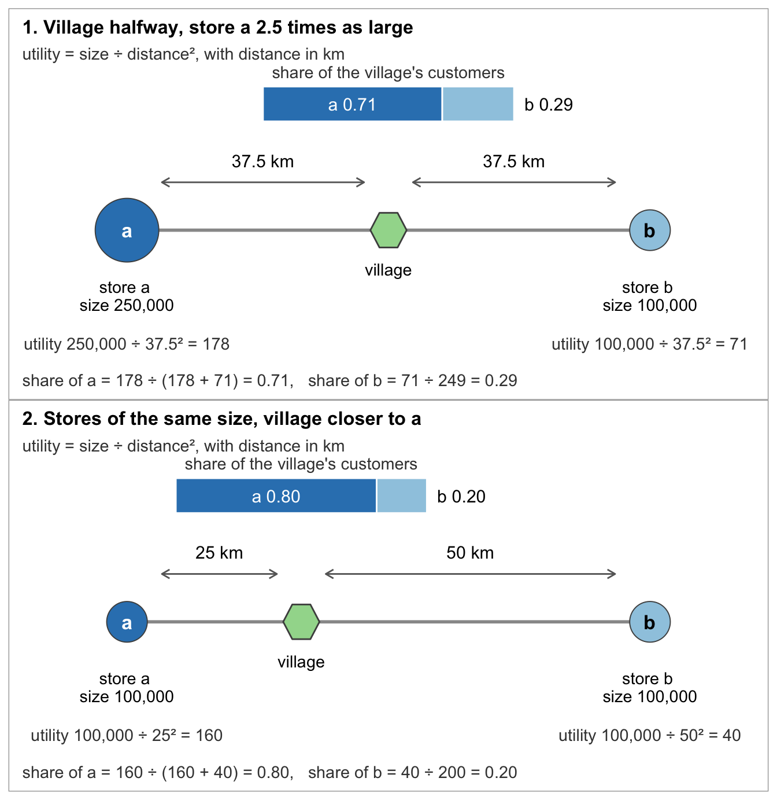
In panel 1, the two distances are equal, so \(37.5^2\) cancels from the fraction and the shares are in the ratio of the sizes: \(250{,}000 \div 350{,}000 = 0.71\). Rodrigue’s figure divides by the distance itself (\(\lambda = 1\)) and gives the same 0.71, because the exponent has no effect when the two distances are equal. In panel 2, the two sizes are equal, so the size cancels and the shares depend on the distances only: store a, at half the distance of store b, has four times the utility of store b. Every store in chapter 18 has the same size (section 4.2), so the model of Part 1 works as in panel 2.
3.2 Distance matrix
village_center <- st_point_on_surface(village)
distmat <- st_distance(village_center, stores)
dim(distmat)[1] 617 28
NoteHow the code works
st_point_on_surface(x) # sf
st_distance(x, y) # sfst_point_on_surface()returns one point for each village, always inside the polygon. For a village with a concave or multi-part shape, the centroid can be outside the polygon.st_distance()returns a matrix of straight-line distances in metres, with one row for each village point and one column for each store.
In the text of chapter 18, the village points are called centroids. The median distance between the point on the surface and the centroid of a village is 80 m. The largest distance is 1,411 m. In 8 villages, the centroid lies outside the village. The map below shows one of them, Yong’an Village (永安里) in Xitun District, where the two points are 982 m apart.
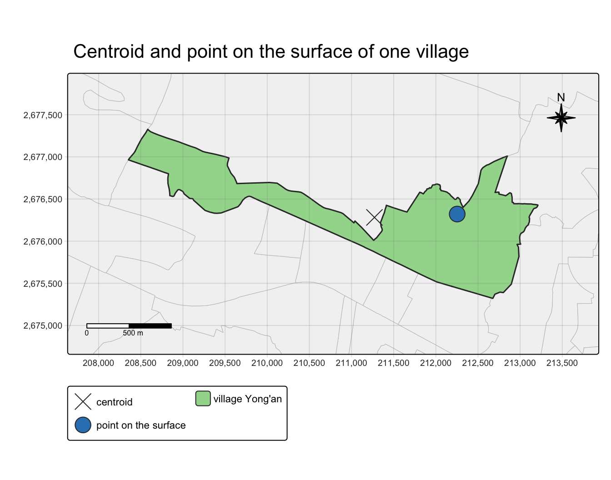
dm_v <- filter(village, VILLCODE == "66000060018")
dm_pts <- st_sf(point = c("centroid", "point on the surface"),
geometry = c(st_geometry(st_centroid(dm_v)),
st_geometry(st_point_on_surface(dm_v))))
dm_box <- st_bbox(st_buffer(dm_v, 600))
tm_shape(village, bbox = dm_box) +
tm_polygons(fill = "grey95", col = "grey75", lwd = 0.5) +
tm_shape(dm_v) +
tm_polygons(fill = "#a1d99b", col = "grey20", lwd = 1.5) +
tm_shape(dm_pts) +
tm_symbols(shape = "point", fill = "point", size = 1.2, col = "grey20",
fill.scale = tm_scale_categorical(values = c("#e6550d", "#3182bd")),
shape.scale = tm_scale_categorical(values = c(4, 21)),
fill.legend = tm_legend(title = ""), shape.legend = tm_legend_combine("fill")) +
tm_add_legend(type = "polygons", labels = "village Yong'an", fill = "#a1d99b",
col = "grey20") +
tm_title("Centroid and point on the surface of one village") +
tm_compass(type = "8star", size = 2, position = c("right", "top")) +
tm_scalebar(position = c("left", "bottom")) +
tm_grid(alpha = 0.2) +
tm_layout(frame = TRUE, legend.outside = TRUE, legend.outside.position = "right")
NoteHow the code works
st_centroid(x); st_point_on_surface(x) # sf
tm_symbols(shape, fill, size, fill.scale, shape.scale) # tmap
tm_scale_categorical(values); tm_legend_combine(x) # tmapdm_ptsholds the two points of Yong’an Village: its centroid and its point on the surface.bboxin the firsttm_shape()sets the extent of the map to the village with a margin of 600 m.tm_symbols()draws the centroid as a cross and the point on the surface as a blue circle.tm_legend_combine("fill")puts the shape and the colour of each point in one legend entry.
The centroid is the centre of mass of the polygon. Yong’an Village is a narrow strip to the west and a wider block to the east, and the centre of mass of the two falls between them, outside the village. st_point_on_surface() returns a point inside the polygon.
Each row of distmat holds the distances from one village to the 28 stores. The map below shows the row of Pingxin Village (平心里) in Beitun District, the village in which store BT is located.
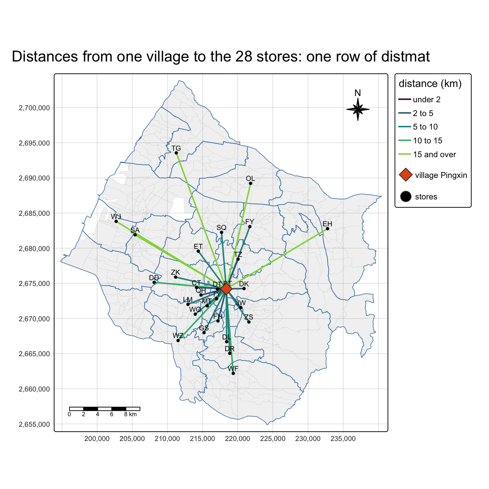
dm_k <- which(village$VILLCODE == "66000080035")
dm_lines <- st_sf(Store_CD = stores$Store_CD,
distance_km = as.numeric(distmat[dm_k, ]) / 1000,
geometry = st_nearest_points(village_center[dm_k, ], stores))
tm_shape(village) +
tm_polygons(fill = "grey95", col = "grey85", lwd = 0.3) +
tm_shape(town) +
tm_borders(col = "steelblue", lwd = 0.8) +
tm_shape(dm_lines) +
tm_lines(col = "distance_km", lwd = 2,
col.scale = tm_scale_intervals(breaks = c(0, 2, 5, 10, 15, 25),
labels = c("under 2", "2 to 5", "5 to 10",
"10 to 15", "15 and over"),
values = c("#440154", "#31688e", "#21918c", "#35b779", "#90d743")),
col.legend = tm_legend(title = "distance (km)")) +
tm_shape(stores) +
tm_dots(fill = "black", size = 0.25) +
tm_text("Store_CD", size = 0.6, ymod = 0.6) +
tm_shape(village_center[dm_k, ]) +
tm_symbols(shape = 23, fill = "#e6550d", col = "grey20", size = 0.9) +
tm_add_legend(type = "symbols", labels = "village Pingxin", shape = 23,
fill = "#e6550d", col = "grey20") +
tm_add_legend(type = "symbols", labels = "stores", fill = "black") +
tm_title("Distances from one village to the 28 stores: one row of distmat") +
tm_compass(type = "8star", size = 2, position = c("right", "top")) +
tm_scalebar(position = c("left", "bottom")) +
tm_grid(alpha = 0.2) +
tm_layout(frame = TRUE, legend.outside = TRUE, legend.outside.position = "right")
NoteHow the code works
st_nearest_points(x, y) # sf
tm_lines(col, lwd, col.scale, col.legend) # tmap
tm_scale_intervals(breaks, labels, values) # tmapdm_kis the row number of Pingxin Village invillageand indistmat.st_nearest_points()returns a straight line from the village point to each store.dm_linesholds the 28 lines with the distances of rowdm_kofdistmatin kilometres.tm_lines()colours each line by its distance class.tm_scale_intervals()sets the class breaks at 2, 5, 10 and 15 km.
The distances in the row of Pingxin Village run from 0.2 km to store BT to 20.6 km to store TG. Each of the 617 rows of distmat holds 28 distances in the same way.
rownames(distmat) <- village$VILLCODE
colnames(distmat) <- stores$Store_CD
distmat_long <- distmat |>
as.data.frame() |>
rownames_to_column(var = "VILLCODE") |>
pivot_longer(cols = -VILLCODE,
names_to = "Store_CD",
values_to = "distance") |>
mutate(distance = as.numeric(distance))
NoteHow the code works
rownames(x) <- ...; colnames(x) <- ... # base R
rownames_to_column(df, var) # tibble
pivot_longer(df, cols, names_to, values_to) # tidyrrownames()andcolnames()set the village codes as the row names of the matrix and the store codes as its column names.as.data.frame()turns the matrix into a data frame with one column for each store, andrownames_to_column()moves the row names into a columnVILLCODE.pivot_longer()turns the 28 store columns into rows: one row for each pair of village and store, with the store code inStore_CDand the distance indistance.as.numeric()removes the unit “m” thatst_distance()attaches to the distances.
In distmat, each row is a village \(i\), each column is a store \(j\), and each cell holds the distance \(d_{ij}\) in metres. The table below shows the first three rows and the first four columns.
| village \(i\) | TY | DL | BT | JW | … |
|---|---|---|---|---|---|
| 66000110029 | 28,067 | 34,345 | 27,046 | 30,239 | … |
| 66000120001 | 15,319 | 21,157 | 15,298 | 18,551 | … |
| 66000120002 | 15,499 | 21,296 | 15,519 | 18,761 | … |
| … | … | … | … | … | … |
pivot_longer() turns each cell of distmat into a row of distmat_long. The four cells of the first row of distmat become rows 1 to 4:
| row | village \(i\)VILLCODE |
store \(j\)Store_CD |
distance \(d_{ij}\) (m)distance |
|---|---|---|---|
| 1 | 66000110029 | TY | 28,067 |
| 2 | 66000110029 | DL | 34,345 |
| 3 | 66000110029 | BT | 27,046 |
| 4 | 66000110029 | JW | 30,239 |
| … | … | … | … |
3.3 Interaction matrix
huff.shares() takes one table, the interaction matrix of Wieland (2017, p. 300), with one row for each pair of origin and store and the columns for the attraction and the distance.
interaction_matrix <- distmat_long |>
left_join(stores |>
st_drop_geometry() |>
select(Store_CD, Store_size),
by = "Store_CD") |>
relocate(distance, .after = last_col())
summary(interaction_matrix) VILLCODE Store_CD Store_size distance
Length :17276 Length :17276 Min. :100 Min. : 108.5
N.unique : 617 N.unique : 28 1st Qu.:100 1st Qu.: 6678.7
N.blank : 0 N.blank : 0 Median :100 Median :11965.3
Min.nchar: 11 Min.nchar: 2 Mean :100 Mean :12762.7
Max.nchar: 11 Max.nchar: 2 3rd Qu.:100 3rd Qu.:18122.3
Max. :100 Max. :41395.4
NoteHow the code works
select(df, ...); relocate(df, x, .after = last_col()) # dplyr- The join adds the
Store_sizeof each store to its rows.st_drop_geometry()removes the store points first, so that the result is a plain data frame. relocate()movesdistanceto the last column. The column order does not matter tohuff.shares(), which finds the columns by name.
The matrix has 17,276 rows, one for each of the 617 villages paired with each of the 28 stores. The shortest distance is 108 m, and the longest distance is 41.4 km.
The rows are ordered by village. Rows 1 to 28 pair the first village, Jianxing Village (建興里) in Dajia District, with each of the 28 stores, and row 29 starts the second village. The table below shows six of the rows.
| row | village \(i\)VILLCODE |
store \(j\)Store_CD |
attraction \(A_j\)Store_size |
distance \(d_{ij}\) (m)distance |
|---|---|---|---|---|
| 1 | 66000110029 | TY | 100 | 28,067 |
| 2 | 66000110029 | DL | 100 | 34,345 |
| 3 | 66000110029 | BT | 100 | 27,046 |
| … | … | … | … | … |
| 28 | 66000110029 | QH | 100 | 27,120 |
| 29 | 66000120001 | TY | 100 | 15,319 |
| … | … | … | … | … |
| 17,276 | 66000280020 | QH | 100 | 9,932 |
Each row holds one pair of village and store, with the two inputs of the utility \(U_{ij}\) of section 3.1: the attraction \(A_j\) and the distance \(d_{ij}\). huff.shares() computes one probability \(p_{ij}\) for each row.
3.4 Huff probabilities
huff_share <- huff.shares(interaction_matrix,
"VILLCODE", "Store_CD",
"Store_size", "distance")
NoteHow the code works
huff.shares(huffdataset, origins, locations, attrac, dist,
gamma = 1, lambda = -2) # MCI- The arguments name the columns of the interaction matrix: origins, locations, attraction and distance.
- With the defaults
gamma = 1andlambda = -2,huff.shares()computes \(U_{ij} = A_j \, d_{ij}^{-2}\) for each row and writes it toU_ij. It writes the sum of \(U_{ij}\) over the 28 stores of each village tosum_U_ij, and the probability \(p_{ij}\) top_ij.
huff_share |>
group_by(VILLCODE) |>
summarise(sum_p = sum(p_ij)) |>
pull(sum_p) |>
range()[1] 1 1The probabilities of each village sum to 1, as in the formula of section 3.1.
huff_share is the interaction matrix with three new columns. huff.shares() also sorts the rows by village code and store code, so the first village of huff_share is Jiguang Village (繼光里) in Central District, and its first store is BT. The table below shows five of the rows.
| row | village \(i\)VILLCODE |
store \(j\)Store_CD |
distance \(d_{ij}\) (m)distance |
utility \(U_{ij}\)U_ij |
sum of utilities \(\sum_k U_{ik}\)sum_U_ij |
probability \(p_{ij}\)p_ij |
|---|---|---|---|---|---|---|
| 1 | 66000010001 | BT | 3,807 | 6.90e-06 | 1.97e-04 | 0.035 |
| 2 | 66000010001 | CT | 5,337 | 3.51e-06 | 1.97e-04 | 0.018 |
| 3 | 66000010001 | DD | 10,762 | 8.63e-07 | 1.97e-04 | 0.004 |
| … | … | … | … | … | … | … |
| 28 | 66000010001 | ZS | 3,887 | 6.62e-06 | 1.97e-04 | 0.034 |
| 29 | 66000010002 | BT | 3,584 | 7.78e-06 | 2.00e-04 | 0.039 |
| … | … | … | … | … | … | … |
In row 1, \(U_{ij} = 100 \times 3{,}807^{-2} = 6.90 \times 10^{-6}\) and \(p_{ij} = 6.90 \times 10^{-6}
\div 1.97 \times 10^{-4} = 0.035\). sum_U_ij is the same in the 28 rows of a village. huff.shares() stores sum_U_ij as a list column, so unlist() turns it into numbers for the table. Store_size is left out of the table: it is 100 in every row.
3.5 Trade area of store BT
market_share <- huff_share |>
filter(Store_CD == "BT")
Trade_area <- village |>
left_join(market_share, by = "VILLCODE")
selected_store <- stores |>
filter(Store_CD == "BT")
NoteHow the code works
filter()keeps the 617 rows of store BT, one for each village.left_join()adds the probabilityp_ijof store BT to each village polygon. The chapter’sleft_join()has nobyand joins onVILLCODE, the one column the two tables share. Here the key is written out.selected_storeis the point of store BT, drawn on the map.
Trade_area holds the 617 village polygons, each with the distance to store BT and the probability of choosing BT. The table below shows six of its 27 columns for the first three villages.
| row | village \(i\)VILLCODE |
village nameVILLENG |
store \(j\)Store_CD |
distance \(d_{ij}\) (m)distance |
probability \(p_{ij}\)p_ij |
polygongeometry |
|---|---|---|---|---|---|---|
| 1 | 66000110029 | Jianxing Vil. | BT | 27,046 | 0.021 | MULTIPOLYGON |
| 2 | 66000120001 | Aofeng Vil. | BT | 15,298 | 0.017 | MULTIPOLYGON |
| 3 | 66000120002 | Lingquan Vil. | BT | 15,519 | 0.015 | MULTIPOLYGON |
| … | … | … | … | … | … | … |
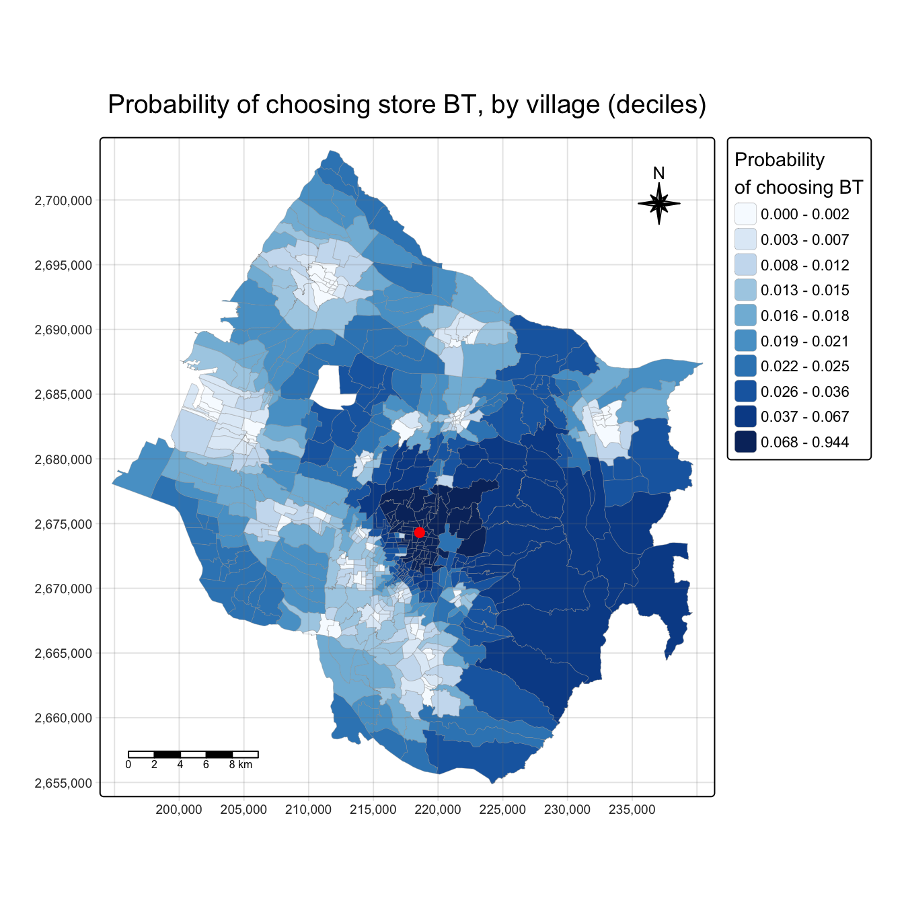
tm_shape(Trade_area) +
tm_polygons(fill = "p_ij",
fill.scale = tm_scale_intervals(style = "quantile", n = 10,
values = "brewer.blues"),
fill.legend = tm_legend(title = "Probability\nof choosing BT"),
col = "grey60", lwd = 0.2) +
tm_shape(selected_store) +
tm_dots(size = 0.5, fill = "red", col = "black") +
tm_title("Probability of choosing store BT, by village (deciles)") +
tm_compass(type = "8star", size = 2, position = c("right", "top")) +
tm_scalebar(position = c("left", "bottom")) +
tm_grid(alpha = 0.2) +
tm_layout(frame = TRUE, legend.outside = TRUE)
NoteHow the code works
tm_scale_intervals(style = "quantile", n = 10, values) # tmaptm_scale_intervals(style = "quantile", n = 10), the setting of the chapter, divides the villages into ten classes of equal size, the deciles ofp_ij, and colours them from light to dark blue.- The store is drawn as a red point with a black outline.
The probability of choosing BT is highest in the villages around the store. The median village has a probability of 0.019. The darkest class, the top decile, spans the probabilities from 0.068 to 0.944, a range about 13 times as wide as that of the lightest nine classes together.
The probability also depends on the distance to the other stores. In the lowest decile, the median distance to BT is 14.8 km and the median distance to the nearest other store is 0.45 km. In deciles 5 to 7, the median distance to BT is similar, 13.5 km. The nearest other store of these villages is a median of 3.5 km away, so the other stores add less utility to the denominator of \(p_{ij}\), and the probability of choosing BT is higher.
3.6 Estimated customers of each store
On slide 12, the expected customers from village \(i\) at store \(j\) are \(E_{ij} = p_{ij} C_i\). In the chapter, \(C_i\) is the population of the village, P_CNT.
huff_share_pp <- huff_share |>
left_join(village |>
st_drop_geometry() |>
select(VILLCODE, P_CNT),
by = "VILLCODE") |>
relocate(distance, .after = last_col())
huff_total <- shares.total(huff_share_pp,
"VILLCODE", "Store_CD",
"p_ij", "P_CNT")
NoteHow the code works
shares.total(mcidataset, submarkets, suppliers,
shares, localmarket) # MCI- The join adds the population of each village to its 28 rows.
shares.total()multiplies each probability by the population of its village and sums the products over the villages of each store. It returns one row for each store, with the store code insuppliers_single, the estimated customers \(T_j\) insum_E_jand the market share inshare_j.
huff_share_pp adds the population P_CNT of each village to huff_share. The expected customers \(E_{ij}\) are computed inside shares.total() and are not a column of huff_share_pp. The last column of the table below computes them for the first three rows.
| row | village \(i\)VILLCODE |
store \(j\)Store_CD |
probability \(p_{ij}\)p_ij |
residents \(C_i\)P_CNT |
expected customers \(E_{ij} = p_{ij} C_i\) (computed for this table) |
|---|---|---|---|---|---|
| 1 | 66000010001 | BT | 0.035 | 1,867 | 65 |
| 2 | 66000010001 | CT | 0.018 | 1,867 | 33 |
| 3 | 66000010001 | DD | 0.004 | 1,867 | 8 |
| … | … | … | … | … | … |
huff_total has one row for each store:
| row | store \(j\)suppliers_single |
expected customers \(T_j\)sum_E_j |
market share \(M_j\)share_j |
|---|---|---|---|
| 1 | BT | 138,306 | 0.0493 |
| 2 | CT | 103,690 | 0.0370 |
| 3 | DD | 82,681 | 0.0295 |
| … | … | … | … |
| 28 | ZS | 103,063 | 0.0368 |
store_sales_est <- stores |>
left_join(huff_total,
by = join_by(Store_CD == suppliers_single)) |>
st_drop_geometry()The sum of sum_E_j over the 28 stores is 2,804,359, the population of the 617 villages. The residents of each village are divided among the 28 stores by the probabilities \(p_{ij}\), which sum to 1. The chart compares the estimated customers with the recorded sales of each store. In the “How to read” tab, the same chart carries a note on each of its parts: the dots, the fitted line and its band, the line of results, the two histograms on the margins and their count scale.
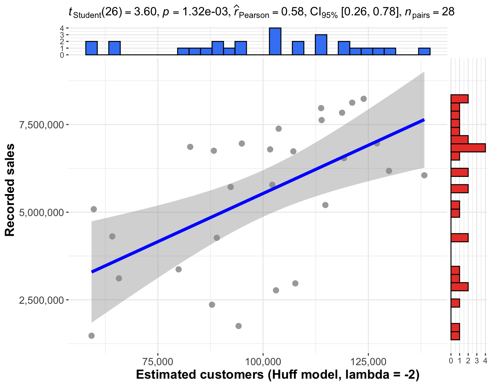
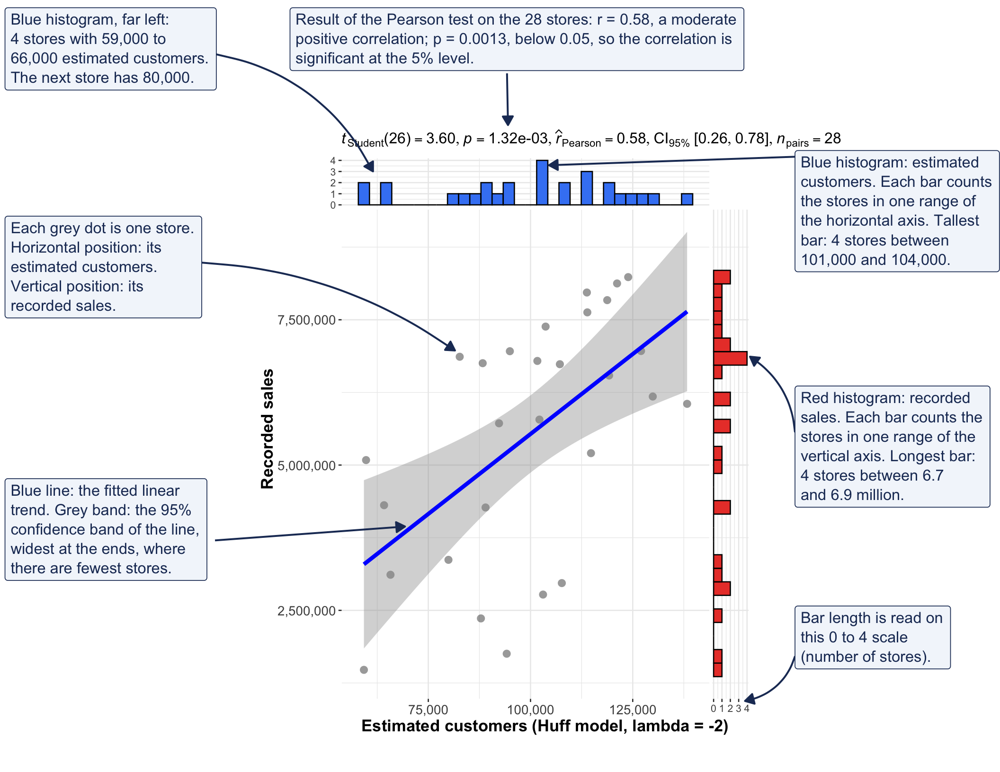
sales_plot <- ggscatterstats(store_sales_est,
x = sum_E_j,
y = Total_Sales,
xlab = "Estimated customers (Huff model, lambda = -2)",
ylab = "Recorded sales",
bf.message = FALSE) +
scale_x_continuous(labels = scales::comma) +
scale_y_continuous(labels = scales::comma) +
theme(text = element_text(size = 13),
plot.subtitle = element_text(size = 12),
ggside.axis.text = element_text(size = 8))
sales_plotThe annotated chart in the “How to read” tab is the same chart drawn on a larger canvas. The notes and arrows are placed at fixed positions on that canvas:
ink <- "#1F3864"
read_notes <- data.frame(
x = c(0.29, 0.005, 0.005, 0.005, 0.795, 0.795, 0.795),
y = c(0.99, 0.99, 0.72, 0.38, 0.805, 0.50, 0.215),
label = c(
"Result of the Pearson test on the 28 stores: r = 0.58, a moderate\npositive correlation; p = 0.0013, below 0.05, so the correlation is\nsignificant at the 5% level.",
"Blue histogram, far left:\n4 stores with 59,000 to\n66,000 estimated customers.\nThe next store has 80,000.",
"Each grey dot is one store.\nHorizontal position: its\nestimated customers.\nVertical position: its\nrecorded sales.",
"Blue line: the fitted linear\ntrend. Grey band: the 95%\nconfidence band of the line,\nwidest at the ends, where\nthere are fewest stores.",
"Blue histogram: estimated\ncustomers. Each bar counts\nthe stores in one range of\nthe horizontal axis. Tallest\nbar: 4 stores between\n101,000 and 104,000.",
"Red histogram: recorded\nsales. Each bar counts the\nstores in one range of the\nvertical axis. Longest bar:\n4 stores between 6.7\nand 6.9 million.",
"Bar length is read on\nthis 0 to 4 scale\n(number of stores)."))
read_arrows <- data.frame(
x = c(0.507, 0.215, 0.20, 0.215, 0.795, 0.795, 0.795),
y = c(0.905, 0.93, 0.66, 0.30, 0.797, 0.44, 0.15),
xend = c(0.508, 0.373, 0.455, 0.405, 0.549, 0.750, 0.745),
yend = c(0.838, 0.778, 0.546, 0.318, 0.786, 0.538, 0.092),
curv = c(0, -0.25, -0.15, 0, 0, 0.25, -0.3))
read_plot <- cowplot::ggdraw() +
cowplot::draw_plot(sales_plot, x = 0.255, y = 0.04, width = 0.50, height = 0.80)
for (i in seq_len(nrow(read_arrows))) {
read_plot <- read_plot +
annotate("curve",
x = read_arrows$x[i], y = read_arrows$y[i],
xend = read_arrows$xend[i], yend = read_arrows$yend[i],
curvature = read_arrows$curv[i], colour = ink, linewidth = 0.7,
arrow = arrow(length = unit(0.11, "inches"), type = "closed"))
}
read_plot +
annotate("label", x = read_notes$x, y = read_notes$y, label = read_notes$label,
hjust = 0, vjust = 1, size = 4.3, colour = ink, fill = "#F3F6FB",
linewidth = 0.3, lineheight = 1.05, label.padding = unit(0.35, "lines"))
NoteHow the code works
ggscatterstats(data, x, y, xlab, ylab, bf.message) # ggstatsplot
theme(text, plot.subtitle, ggside.axis.text) # ggplot2, ggsideggscatterstats()draws one point for each store, a least-squares line with its confidence band, and the result of a Pearson correlation test in the subtitle.- By default,
ggscatterstats()also draws histograms on the top and right margins: the estimated customers of the 28 stores along the top, and their recorded sales along the right side. Each bar counts the stores in one bin. bf.message = FALSEleaves out the second line of results, printed below the chart in the chapter’s call. That line is a Bayesian version of the test. The lessons use p-values, so only the frequentist line of results is shown.theme(text = element_text(size = 13))enlarges the axis labels and titles, andplot.subtitlesets the size of the line of results. Theggsidepackage draws the histograms on the margins.ggside.axis.textsets their count labels to 8 points so that the labels 0 to 4 do not overlap.ggscatterstats()returns aggplot2chart, soscale_x_continuous()andscale_y_continuous()can be added to it.scales::commawrites the axis labels with thousands separators.
The line above the chart is the result of a Pearson correlation test:
| Item | Meaning |
|---|---|
| \(t_{\text{Student}}(26) = 3.60\) | test statistic, with 26 degrees of freedom: 28 stores minus 2 |
| \(p = 1.32 \times 10^{-3}\) | p-value: the probability of a correlation at least this strong if there were no correlation |
| \(\hat{r}_{\text{Pearson}} = 0.58\) | Pearson correlation between the estimated customers and the recorded sales |
| \(\text{CI}_{95\%}\) [0.26, 0.78] | 95% confidence interval of the correlation |
| \(n_{\text{pairs}} = 28\) | number of stores |
Across the 28 stores, the Pearson correlation between the estimated customers and the recorded sales is 0.58, with a p-value of 0.0013. A linear fit of the sales on the estimate explains 33% of the variation in sales.
The chapter ends with huff_share_wider, a table with one column for each store. The table is not used on this page.
4 Part 2: Review and extension
In sections 4.1 to 4.3, the inputs of the Huff model of Part 1 are checked: the study area, the attraction of the stores and the distance exponent. In sections 4.4 and 4.5, the trade areas and the estimated sales are compared at the default exponent and at the exponent fitted in section 4.3.
| Section | Task | Source |
|---|---|---|
| Checks of the chapter’s inputs | ||
| 4.1 | Check which parts of Taichung City the villages cover | Wieland (2017), pp. 300, 303; Huff (1963), p. 87 |
| 4.2 | Test the effect of the constant attraction Store_size = 100 |
slide 9; Huff (1963), p. 86; Wieland (2017), p. 299 |
| 4.3 | Fit the distance exponent to the recorded sales of the stores | Huff (1963), pp. 84, 87; Wieland (2017), pp. 299-301; MCI manual, huff.lambda(), pp. 24-25 |
| Results at the fitted exponent | ||
| 4.4 | Map the trade areas as probabilities, at the default and the fitted exponent | Huff (1963), pp. 82, 84, 87; Wieland (2017), p. 298; Rodrigue, A.15 |
| 4.5 | Compare the estimated and recorded sales of each store at the fitted exponent | slide 13; Wieland (2017), p. 300 |
The MCI model of slides 14 and 15 is estimated by regression on observed market shares \(p_{ij}\). Nakanishi and Cooper (1982) showed that the regression can be run with dummy variables in standard regression packages. Wieland (2017, p. 300) names the MCI model “probably the best way to estimate the parameters” when \(p_{ij}\) is observed. The sales file records the sales of each store by POD code. The POD code may record where the customers come from. No table in the data links a POD code to a village, so the share of each village’s customers at each store is unknown. The MCI model is therefore not fitted on this page.
4.1 Study area: unassigned areas and Heping District
Wieland (2017, p. 300) names the first step of a Huff analysis: “to delineate the study area itself and to record the focused origins and locations”. Every origin in the study area receives probabilities, and an origin outside it has no customers in the model. In chapter 18, the study area is the villages of VILLAGE_TC with a population. The question for this section is which parts of Taichung City these villages cover.
pop_raw <- read_csv("data/aspatial/pop2019.csv") |>
mutate(V_ID = str_remove_all(V_ID, "-"))
pop_raw |>
filter(!V_ID %in% village$VILLCODE) |>
select(V_ID, TOWN, VILLAGE, P_CNT) |>
kable()| V_ID | TOWN | VILLAGE | P_CNT |
|---|---|---|---|
| 66000290004 | 和平區 | 中坑里 | 519 |
| 66000290002 | 和平區 | 天輪里 | 469 |
| 66000290008 | 和平區 | 平等里 | 1013 |
| 66000290005 | 和平區 | 自由里 | 1253 |
| 66000290001 | 和平區 | 南勢里 | 2142 |
| 66000290007 | 和平區 | 梨山里 | 2254 |
| 66000290003 | 和平區 | 博愛里 | 1919 |
| 66000290006 | 和平區 | 達觀里 | 1333 |
NoteHow the code works
pop_rawis a fresh copy of the population table, with the hyphens removed fromV_ID.filter(!V_ID %in% village$VILLCODE)keeps the rows of the population table that have no polygon invillage.
The population table has 8 villages with no polygon, all in Heping District (和平區), with 10,902 residents. The town layer has 0 polygons named 和平區, so Heping District is missing from the town layer as well as the village layer. The 617 villages of the study area cover 1,209 km². The five unassigned areas removed in section 2.5.4 cover 23.3 km². The population table lists no residents for them.
Four of the unassigned areas are on the coast of Qingshui, Wuqi and Longjing Districts, and one is inland in Qingshui District. The map below shows them with the villages of the study area.
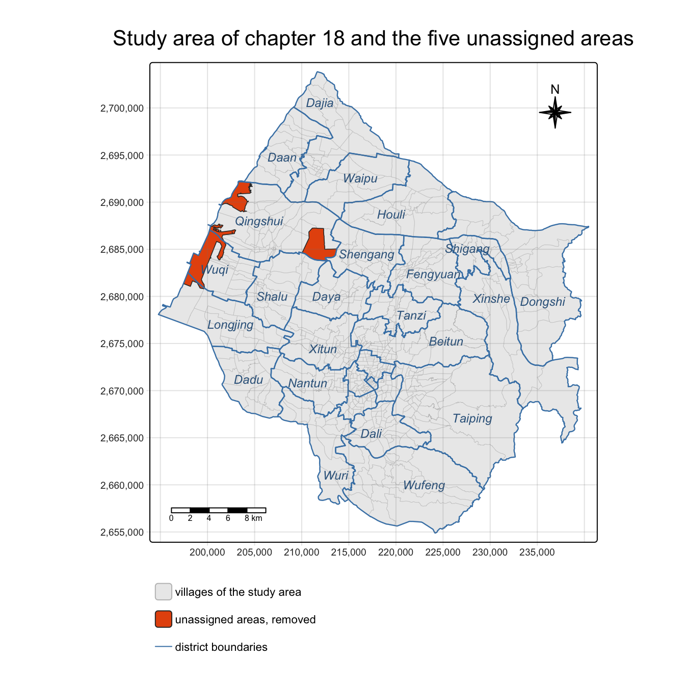
unassigned <- st_read(dsn = "data/geospatial", layer = "VILLAGE_TC", quiet = TRUE) |>
filter(str_detect(VILLCODE, "S0"))
tm_shape(village) +
tm_polygons(fill = "grey92", col = "grey75", lwd = 0.3) +
tm_shape(unassigned) +
tm_polygons(fill = "#e6550d", col = "grey20", lwd = 0.8) +
tm_shape(town) +
tm_borders(col = "steelblue", lwd = 1.2) +
tm_shape(town_label) +
tm_text("name", size = 0.75, col = "steelblue4", fontface = "italic") +
tm_add_legend(type = "polygons", labels = "villages of the study area",
fill = "grey92", col = "grey75") +
tm_add_legend(type = "polygons", labels = "unassigned areas, removed",
fill = "#e6550d", col = "grey20") +
tm_add_legend(type = "lines", labels = "district boundaries", col = "steelblue") +
tm_title("Study area of chapter 18 and the five unassigned areas") +
tm_compass(type = "8star", size = 2, position = c("right", "top")) +
tm_scalebar(position = c("left", "bottom")) +
tm_grid(alpha = 0.2) +
tm_layout(frame = TRUE, legend.outside = TRUE, legend.outside.position = "right")
NoteHow the code works
unassignedreads the village layer again and keeps the five areas withS0in their code, which section 2.5.4 removed fromvillage.- The unassigned areas are drawn in orange over the grey villages of the study area.
town_labelholds the district names placed for the map of section 2.3.2.
The 10,902 residents of Heping District are 0.39% of the residents in the population table. Without a polygon for each of their villages, the distances from these residents to the stores cannot be computed, so their effect on the estimate of each store is unknown.
Wieland (2017, p. 303) cites the principles of Huff and McCallum (2008) for the study area: “little in from outside” and “little out from inside”, which means “that the majority of shopping interactions should take place within the study area”. The model divides all the residents of the 617 villages among the 28 stores, so it has no customers from outside the city. Residents of villages near the city boundary may also use stores in the neighbouring counties, which are not in the data, so the second principle cannot be checked for these villages.
4.2 Store attraction: constant size versus sales area
Huff (1963, p. 86) measured the attraction of a shopping centre as “the square footage of selling space devoted to the sale of a particular class of goods”. Wieland (2017, p. 299) describes the attraction as the size of the location, “operationalized by the sales area”. In chapter 18, every store has Store_size = 100. The Capacity column of storeCD.csv is 50 for every store. The question for this section is what a constant attraction leaves of the Huff model.
im_size_1 <- interaction_matrix |>
mutate(Store_size = 1)
im_size_50 <- interaction_matrix |>
mutate(Store_size = 50)
p_by_size <- function(huff) {
huff |>
arrange(VILLCODE, Store_CD) |>
pull(p_ij)
}
p_100 <- p_by_size(huff_share)
p_1 <- p_by_size(huff.shares(im_size_1, "VILLCODE", "Store_CD",
"Store_size", "distance"))
p_50 <- p_by_size(huff.shares(im_size_50, "VILLCODE", "Store_CD",
"Store_size", "distance"))
size_diff <- c(size_1_vs_100 = max(abs(p_1 - p_100)),
size_50_vs_100 = max(abs(p_50 - p_100)))
size_diff size_1_vs_100 size_50_vs_100
9.992007e-16 0.000000e+00
NoteHow the code works
im_size_1andim_size_50are copies of the interaction matrix withStore_sizeset to 1 and to 50 for every store.huff.shares()checks its first argument withexists(), which looks up the argument by its name in the workspace. The function stops with an error when the result of a|>chain, or a data frame created inside a function, is passed to it.im_size_1andim_size_50are therefore saved under their own names first.p_by_size()sorts the rows by village and store, so that the probabilities for sizes 1, 50 and 100 are in the same order, and returns the columnp_ij.p_100holds the probabilities of section 3.4.size_diffholds the largest absolute difference betweenp_1andp_100, and betweenp_50andp_100.
The differences between p_1 and p_100 and between p_50 and p_100 are below \(10^{-15}\), the size of a rounding error. With the same \(A_j\) for every store, \(A_j^{\gamma}\) is a common factor of the numerator and the denominator of \(p_{ij}\) and cancels, as in the example of section 3.1. The model of Part 1 is therefore a model of distance only: a village is divided among the stores by \(d_{ij}^{-2}\), and the size of a store has no effect. The data of the exercise have no sales area, seats or opening hours of the stores. The recorded sales of the 28 stores differ by a factor of 5.6 between the highest and the lowest (section 2.5.2).
4.3 Distance decay: default exponent versus a fitted exponent
Huff (1963, p. 84) wrote that analysts using the gravity model “have naively assumed that the exponent 2 which Reilly had originally estimated for intra-urban trade movements would possess the same value within urban areas”. According to Huff, studies had found exponents “from 1.5 to over 3”. In his model, the exponent is “a parameter which is to be estimated empirically” (p. 86). His estimates were 3.191 for clothing and 2.723 for furniture (p. 87). In chapter 18, the default lambda = -2 of huff.shares() is used. Wieland (2017, p. 300) writes that “in many cases, no empirical market shares are available but only observed total sales of stores or locations”, and that many studies therefore fit the Huff model to the observed totals. The data of chapter 18 are of this kind. The Lesson 8 outline links the MCI package, and its reference manual describes huff.lambda() as a function that “estimates a distance decay parameter from observed total store/location data”. According to the manual (p. 25), the fit is “measured using the sum of squared residuals of observed vs. expected total values”.
The question for this section is which value of \(\lambda\) gives estimated totals closest to the recorded sales of the 28 stores. According to Wieland (2017, p. 299), the market area \(T_j\) is “normally measured in persons or money”, and the observed and expected totals have to be in the same unit. The estimated customers are in persons and the sales are in units of money, so the sales are first rescaled to the same total as the population. The rescaling is valid when the sales of a store are proportional to its customers.
\[ \begin{aligned} S_j &= \frac{\text{sales}_j}{\sum_{k=1}^{28} \text{sales}_k} \times \sum_i C_i \\[4pt] &= \frac{\text{recorded sales of store } j}{\text{recorded sales of all 28 stores}} \times \text{population of all villages} \end{aligned} \]
D <- st_distance(village_center, stores) |>
units::drop_units()
P <- village$P_CNT
sales_scaled <- stores$Total_Sales /
sum(stores$Total_Sales) * sum(P)
huff_total_at <- function(lambda) {
U <- D^lambda
p <- U / rowSums(U)
colSums(p * P)
}
NoteHow the code works
Dis the distance matrix of section 3.2 without units: 617 rows for the villages and 28 columns for the stores.sales_scaleddivides each store’s sales by the total sales, and multiplies by the total population, so that the 28 values sum to the population.huff_total_at()computes the Huff model for one value oflambdawith matrices:Uholds \(d_{ij}^{\lambda}\);rowSums(U)gives the sum over the stores of each village;pholds the probabilities;colSums(p * P)gives the estimated customers \(T_j\) of each store.
- The attraction is left out, because a constant attraction cancels (section 4.2).
all.equal(unname(huff_total_at(-2)),
huff_total$sum_E_j[match(stores$Store_CD,
huff_total$suppliers_single)])[1] TRUEAt lambda = -2, the matrix computation gives the same totals as huff.shares() and shares.total() in section 3.6.
The values of \(\lambda\) from \(-0.1\) to \(-4\) are tried in steps of 0.1. This search is the “trial and error” option of huff.lambda(), method = "compare", in which “several values are tried and the best one is found” (MCI manual, p. 24). For each value of \(\lambda\), the estimated totals \(T_j(\lambda)\) are compared with the rescaled sales \(S_j\) by:
- the sum of squared residuals (SSR), the criterion of
huff.lambda()(MCImanual, p. 25); - the mean absolute percentage error (MAPE), formula 6 of Wieland (2017, p. 301), which he lists for the overall fit of a Huff model;
- the root mean squared error (RMSE), the SSR converted to persons per store, for the chart of the error.
\[ \begin{aligned} \text{SSR}(\lambda) &= \sum_{j=1}^{28} \big(T_j(\lambda) - S_j\big)^2 \\ &= \text{sum over the 28 stores of } (\text{estimated customers} - \text{rescaled sales})^2 \\[14pt] \text{MAPE}(\lambda) &= \frac{100}{28} \sum_{j=1}^{28} \frac{|T_j(\lambda) - S_j|}{S_j} \\[4pt] &= 100 \times \text{mean over the 28 stores of } \frac{|\text{estimated customers} - \text{rescaled sales}|}{\text{rescaled sales}} \\[14pt] \text{RMSE}(\lambda) &= \sqrt{\text{SSR}(\lambda) / 28} \\ &= \sqrt{\text{mean over the 28 stores of } (\text{estimated customers} - \text{rescaled sales})^2} \end{aligned} \]
lambda_fit <- tibble(lambda = seq(-0.1, -4, by = -0.1)) |>
mutate(est = map(lambda, huff_total_at),
ssr = map_dbl(est, \(e) sum((e - sales_scaled)^2)),
mape = map_dbl(est, \(e) 100 * mean(abs(e - sales_scaled) / sales_scaled)),
r = map_dbl(est, \(e) cor(e, stores$Total_Sales)))
NoteHow the code works
map(x, f); map_dbl(x, f) # purrrlambdaruns from \(-0.1\) to \(-4\) in steps of 0.1.map()computes the 28 totals for each value and stores them in the list columnest.- For each value,
ssris the sum of squared residuals between the estimated and the rescaled sales.mapeis the mean absolute percentage error, andris the Pearson correlation between the estimated and the recorded sales. \(e)is the short form offunction(e).
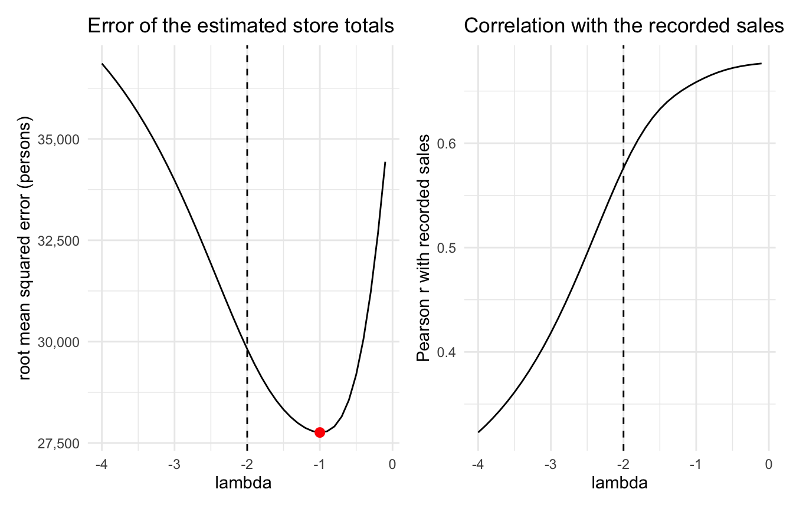
p_ssr <- ggplot(lambda_fit, aes(x = lambda, y = sqrt(ssr / 28))) +
geom_line() +
geom_point(data = best, colour = "red", size = 2.5) +
geom_vline(xintercept = -2, linetype = "dashed") +
scale_y_continuous(labels = scales::comma) +
labs(x = "lambda", y = "root mean squared error (persons)",
title = "Error of the estimated store totals") +
theme_minimal()
p_r <- ggplot(lambda_fit, aes(x = lambda, y = r)) +
geom_line() +
geom_vline(xintercept = -2, linetype = "dashed") +
labs(x = "lambda", y = "Pearson r with recorded sales",
title = "Correlation with the recorded sales") +
theme_minimal()
p_ssr + p_r
NoteHow the code works
- Each chart draws one line over the 40 values of
lambda. The dashed line marks the default \(-2\) of the chapter. - The left chart shows the root mean squared error in persons, the square root of
ssrdivided by 28, the number of stores. Its lowest point, in red, is at the samelambdaas the smallestssr. p_ssr + p_rplaces the left and the right chart side by side withpatchwork.
The sum of squared residuals is smallest at \(\lambda = -1\), with a mean absolute percentage error of 33.6%. At the default \(\lambda = -2\), the mean absolute percentage error is 37.6%. The right chart shows the Pearson correlation of section 3.6. According to Wieland (2017, p. 300), Huff (1962) estimated \(\lambda\) by “comparing expected and observed market shares by correlation coefficients”. The correlation keeps rising as \(\lambda\) approaches 0, the value at which every store receives \(1/28\) of every village. A Pearson correlation does not change when the estimates are shifted or rescaled, so it does not measure how far the estimates are from the recorded values. The sum of squared residuals measures that distance. It is the criterion of huff.lambda(), which searches for \(\lambda\) by bisection:
pop_df <- village |>
st_drop_geometry() |>
select(VILLCODE, P_CNT) |>
as.data.frame()
obs_df <- data.frame(Store_CD = stores$Store_CD,
sales_scaled = sales_scaled)
im_df <- as.data.frame(interaction_matrix)
lambda_bisect <- huff.lambda(im_df, "VILLCODE", "Store_CD",
"Store_size", "distance",
lambda_startv = -0.1, lambda_endv = -4,
localmarket_dataset = pop_df,
origin_id = "VILLCODE", localmarket = "P_CNT",
location_dataset = obs_df,
location_id = "Store_CD",
location_total = "sales_scaled")lambda_bisect$lambda[1] -1.078809
NoteHow the code works
huff.lambda(huffdataset, origins, locations, attrac, dist,
lambda_startv, lambda_endv,
localmarket_dataset, origin_id, localmarket,
location_dataset, location_id, location_total) # MCI- The first five arguments are those of
huff.shares().lambda_startvandlambda_endvbound the search. localmarket_datasetgives the population of each village, andlocation_datasetgives the rescaled sales of each store.huff.lambda()computes the Huff totals for trial values of \(\lambda\), and at each step keeps the half of the search interval with the smaller sum of squared residuals. The default number of steps is 10.im_df,pop_dfandobs_dfare saved under their own names as plain data frames. Likehuff.shares(),huff.lambda()checks its inputs withexists()by name (section 4.2).
huff.lambda() returns \(\lambda = -1.08\), close to the \(-1\) of the grid. The fitted exponent is about half the default of the chapter. It is below the range of 1.5 to over 3 that Huff (1963, p. 84) cites from earlier studies. With a weaker decay, a store draws more of its customers from distant villages. The distances are straight lines, where Huff (1963) used travel time. The model lets the 28 stores compete only with each other, and the data contain no stores of other brands. The sales period is unknown, so a store that opened during the period has sales for part of it only.
4.4 Trade areas: probability surfaces and the most likely store
The studies reviewed by Huff (1963, pp. 82-84) drew trade areas at the breaking point of Reilly’s law (section 3.1), up to which one city “exercises a dominant trading influence” (p. 82). According to Huff (p. 84), breaking points convey “an impression that a trading area is a fixed boundary”. He described a retail trade area as “a series of zonal probability contours radiating away from a shopping center” (p. 87). In “Market Area Analysis”, section A.15 of the Methods chapter of The Geography of Transport Systems, Rodrigue describes market areas as “ranges of probabilities that customers will attend specific locations (Huff’s law)”. The question for this section is how sharply the villages are divided among the stores, at the default and the fitted exponent.
top_p <- function(lambda) {
U <- D^lambda
p <- U / rowSums(U)
apply(p, 1, max)
}
village <- village |>
mutate(top_p_2 = top_p(-2),
top_p_fit = top_p(lambda_star))
NoteHow the code works
apply(X, MARGIN = 1, FUN = max) # base Rtop_p()computes the probabilities for one value oflambda, andapply(p, 1, max)returns the largest probability of each village, the probability of its most likely store.top_p_2holds the largest probabilities at the default \(-2\), andtop_p_fitholds the largest probabilities at the fitted exponent.
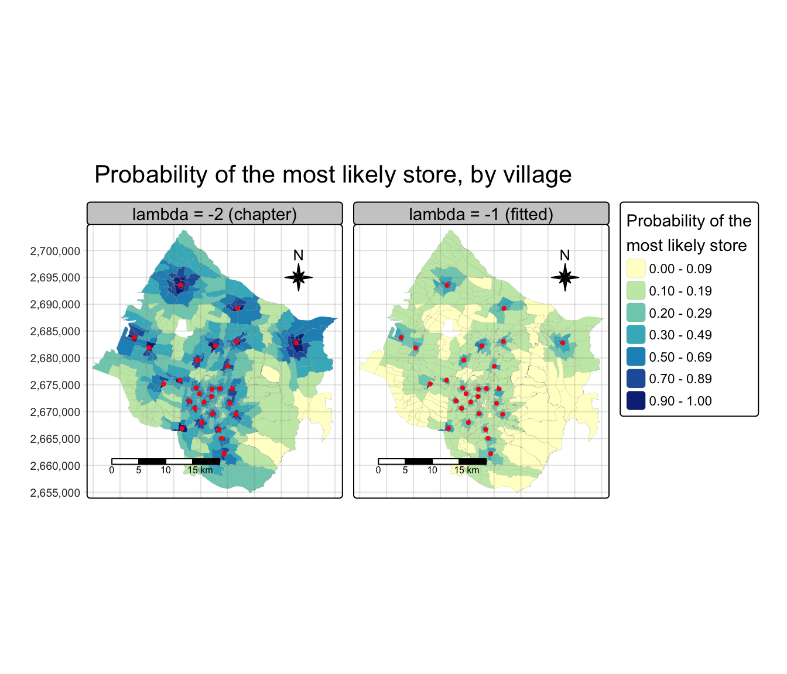
top_long <- village |>
select(top_p_2, top_p_fit) |>
pivot_longer(cols = c(top_p_2, top_p_fit),
names_to = "model", values_to = "top_p") |>
mutate(model = factor(model,
levels = c("top_p_2", "top_p_fit"),
labels = c("lambda = -2 (chapter)",
paste0("lambda = ", lambda_star, " (fitted)"))))
tm_shape(top_long) +
tm_polygons(fill = "top_p",
fill.scale = tm_scale_intervals(
breaks = c(0, 0.1, 0.2, 0.3, 0.5, 0.7, 0.9, 1),
values = "brewer.yl_gn_bu"),
fill.legend = tm_legend(title = "Probability of the\nmost likely store"),
col = "grey60", lwd = 0.1) +
tm_facets_wrap(by = "model", ncol = 2) +
tm_shape(stores) +
tm_dots(fill = "red", size = 0.25) +
tm_title("Probability of the most likely store, by village") +
tm_compass(type = "8star", size = 1.5, position = c("right", "top")) +
tm_scalebar(position = c("left", "bottom")) +
tm_grid(alpha = 0.2) +
tm_layout(frame = TRUE, legend.outside = TRUE,
legend.outside.position = "bottom")
NoteHow the code works
pivot_longer()stackstop_p_2andtop_p_fit, so that each village appears twice, once for each exponent, with the name of the exponent inmodel.factor()sets the order of the maps: the default exponent of the chapter first, then the fitted exponent.tm_facets_wrap(by = "model")draws one map for each exponent. The maps for the default and the fitted exponent use the same fixed classes, so a colour means the same probability on each map.
At the default exponent, 243 of the 617 villages have a store with a probability of 0.5 or more. These villages are the dark patches around each store. The median probability of the most likely store is 0.41. At the fitted exponent, 28 villages have such a store. The median probability of the most likely store is 0.16.
A deterministic trade area, in the sense of Wieland (2017, p. 298), is the set of villages where a store is the most likely store. At the default exponent, the median store has 48% of its estimated customers in such a trade area. At the fitted exponent, the share falls to 20%: most of the estimated customers of a store live in villages where another store is more likely.
4.5 Store sales: recorded versus estimated at the fitted exponent
On slide 13, the total sales of a store are the sum of its expected customers from each village. In the algorithm of Wieland (2017, p. 300), the difference between the observed and the expected total of a store is measured by its absolute percentage error. The question for this section is which stores the fitted model of section 4.3 overestimates or underestimates.
store_fit <- tibble(Store_CD = stores$Store_CD,
Store_Name = stores$Store_Name,
recorded = sales_scaled,
estimated = huff_total_at(lambda_star)) |>
mutate(ratio = recorded / estimated) |>
arrange(ratio)
NoteHow the code works
recordedholds the rescaled sales of section 4.3, andestimatedholds the Huff totals at the fitted exponent.recordedandestimatedare in persons.ratiois the recorded value divided by the estimate: \[ \begin{aligned} \text{ratio}_j &= \frac{S_j}{T_j(\hat{\lambda})} \\[4pt] &= \frac{\text{rescaled sales of store } j}{\text{estimated customers of store } j \text{ at the fitted } \lambda} \end{aligned} \] A store with a ratio below 1 sells less than the model estimates, and a store with a ratio above 1 sells more. The absolute percentage error of Wieland (2017, p. 300) is \(|1/\text{ratio}_j - 1|\). The ratio is used here because it keeps the direction of the difference.
store_fit |>
slice(c(1:5, (n() - 4):n())) |>
kable(digits = c(0, 0, 0, 0, 2),
format.args = list(big.mark = ","))| Store_CD | Store_Name | recorded | estimated | ratio |
|---|---|---|---|---|
| TG | TG - Dajia Taichung | 31,686 | 72,581 | 0.44 |
| QH | QH | 53,646 | 121,320 | 0.44 |
| EH | EH | 26,670 | 57,672 | 0.46 |
| SQ | SQ | 42,664 | 91,237 | 0.47 |
| ZS | Taichung Zhongxing East (ZS) | 50,078 | 103,059 | 0.49 |
| ZK | Taichung Zhong Ke Delco (ZK) | 122,024 | 96,050 | 1.27 |
| JW | Tai-ping (JW) | 146,816 | 114,444 | 1.28 |
| WF | Taichung Wu Feng (WF) | 91,894 | 71,294 | 1.29 |
| DD | Tung Lai (DD) | 124,021 | 86,020 | 1.44 |
| SA | Sa Sa Lu (SA) | 121,706 | 84,028 | 1.45 |
The map below shows the ratio of each store.
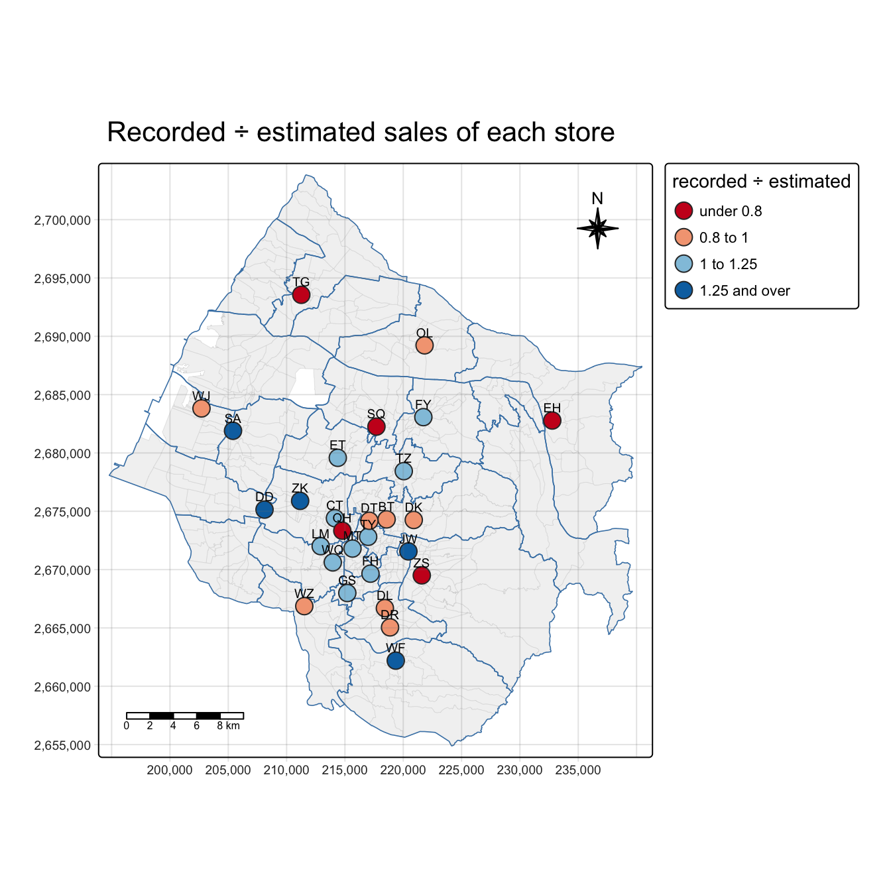
store_ratio <- stores |>
select(Store_CD) |>
left_join(select(store_fit, Store_CD, ratio), by = "Store_CD")
tm_shape(village) +
tm_polygons(fill = "grey95", col = "grey85", lwd = 0.3) +
tm_shape(town) +
tm_borders(col = "steelblue", lwd = 0.8) +
tm_shape(store_ratio) +
tm_symbols(fill = "ratio", size = 0.9, col = "grey20",
fill.scale = tm_scale_intervals(breaks = c(0, 0.8, 1, 1.25, 1.6),
labels = c("under 0.8", "0.8 to 1",
"1 to 1.25", "1.25 and over"),
values = c("#ca0020", "#f4a582",
"#92c5de", "#0571b0")),
fill.legend = tm_legend(title = "recorded ÷ estimated")) +
tm_text("Store_CD", size = 0.6, ymod = 0.85) +
tm_title("Recorded ÷ estimated sales of each store") +
tm_compass(type = "8star", size = 2, position = c("right", "top")) +
tm_scalebar(position = c("left", "bottom")) +
tm_grid(alpha = 0.2) +
tm_layout(frame = TRUE, legend.outside = TRUE, legend.outside.position = "right")
NoteHow the code works
store_ratiojoins theratioofstore_fitto the store points byStore_CD.tm_symbols(fill = "ratio")colours each store by its class. Red stores sell less than the estimate and blue stores sell more. No store has a ratio between 0.56 and 0.8, so the lowest class starts at 0.8.
Stores TG, QH, EH, SQ and ZS sell between 44% and 49% of their estimate. These five stores have the five lowest sales of the 28 stores. Stores DD and SA sell 44% to 45% more than their estimate.
On the map, the five stores with the lowest ratios are in five different districts: TG in Dajia, QH in Xitun, EH in Dongshi, SQ in Shengang and ZS in Taiping. The two stores with the highest ratios, DD in Longjing and SA in Shalu, are neighbours on the west side of the city.
With equal attraction, the estimate of a store depends on its distances to the villages and on their populations. The data do not record the size or the opening date of a store, so the reason for each gap cannot be tested here. Under the algorithm of Wieland (2017, p. 300), the gaps would be absorbed into an adjusted attraction for each store.
5 Reflection
In chapter 18, the Huff probabilities of 28 stores are computed for the villages of Taichung City. The probability map of store BT shows the shape that Huff (1963) described: probabilities that fall with the distance from the store. The estimated customers of the 28 stores have a Pearson correlation of \(r = 0.58\) with the recorded sales.
The model of the chapter is a model of distance only. Every store has the same attraction, so the attraction cancels from the probabilities, and the result depends on the distances and the exponent. The data give no sales area or other size variable for the stores.
The default exponent is not fitted to the data. Huff (1963) treated the exponent as a parameter to estimate. Fitted to the recorded sales, the exponent is about 1.1, compared with the default of 2. The mean absolute percentage error of the estimated sales falls from 37.6% to 33.6%. The trade areas overlap more at the fitted exponent: the median probability of the most likely store falls from 0.41 to 0.16. The median store has 20% of its estimated customers in the villages where it is the most likely store, against 48% at the default exponent.
Five stores sell about half of their estimate. With equal attraction, the estimate of a store depends on its location. The data contain no sales area, opening date or store type that could explain the gaps of these stores.
The study area is the villages with a polygon and a population. Heping District, which has 10,902 residents, is missing from the boundary layers. The model divides all the residents of the study area among the 28 stores. It includes no stores of other brands and no customers from outside the city.
Limits. The distances are straight lines from a point in each village, where Huff (1963) used travel time. The sales period, the meaning of the POD code and the opening dates of the stores are unknown. Without the village of each customer, the MCI model of slides 14 and 15 cannot be estimated from these data.
6 References
Course materials:
- Kam, T.S. (2026). Lesson 8: Delineating and Analysis Trade Area: Huff and MCI Models. ISSS626 Geospatial Analytics and Applications, SMU. Slide deck, 15 slides.
- Kam, T.S. (2026). R for Geospatial Data Science and Analytics, Chapter 18: Market Area Analysis for Retail and Service Locations using Huff model.
Assigned self-reading:
- Rodrigue, J.-P. The Geography of Transport Systems, 6th ed. (web edition). Methods A.18, “Spatial Interactions and the Gravity Model”, and A.15, “Market Area Analysis”.
- Huff, D.L. (1963). “A Probabilistic Analysis of Shopping Center Trade Areas”. Land Economics, 39(1), 81-90.
- Nakanishi, M. and Cooper, L.G. (1982). “Technical Note: Simplified Estimation Procedures for MCI Models”. Marketing Science, 1(3), 314-322.
References listed in the Lesson 8 outline and used on this page:
- Wieland, T. (2017). “Market Area Analysis for Retail and Service Locations with MCI”. The R Journal, 9(1), 298-323.
Software:
- Wieland, T. (2017). MCI: Multiplicative Competitive Interaction (MCI) Model. R package version 1.3.3. Reference manual, function
huff.lambda(), pp. 23-25.
7 About this document
Written and executed in Quarto with R 4.6.1, MCI 1.3.3, sf 1.1.2 and tmap 4.4.1. All figures and tables are generated at render time from the data in data/, so nothing on this page is pasted in.
I used AI assistance while working out the approach and the extensions in Part 2. The analysis was run and checked by me.